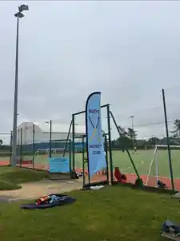

Junior Hockey
U8 • U10 • U12 • U14 • U16
Fun, inclusive development for young players in Bude and the surrounding area.

Play, learn and belong
Festival information, age-group news, training updates and junior sponsor recognition can all be published here.
Age-group hockey
Dedicated development pathways from U8 through to U16.
Festivals & fixtures
Keep families up to date with upcoming events, venues and timings.
Junior sponsors
Businesses can support youth hockey and gain recognition across the site and club channels.
Training Times
Training at Budehaven Astro Turf Pitch, Stratton Road, Bude EX23 8AW.
Mixed U8s Tournaments — Cornwall League
Dragon Leisure Centre, Bodmin
- Sunday 8 November 2026
- Sunday 13 December 2026
- Sunday 7 February 2027
- Sunday 7 March 2027
Juniors & Welfare
For junior hockey enquiries or any welfare concerns, please contact Tammy Snowsill.
Junior Facebook
Updates and information for Bude Hockey Club juniors and families.
Junior Fixtures & Competitions
Dates from Cornwall Hockey Association's junior competition calendar. Select an age group to find the dates, competition and venue. Bude participation and start times should be confirmed with the team coach.
Source: Cornwall Hockey Association Junior Club Competitions Calendar, v1 (28 July 2026). This is a county-wide schedule, not confirmation of Bude's entry into every competition. Dates and venues may change.